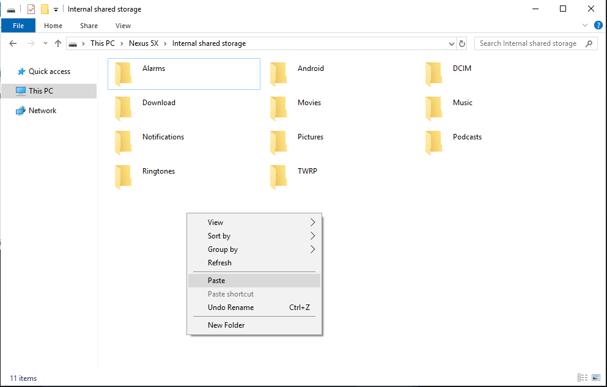
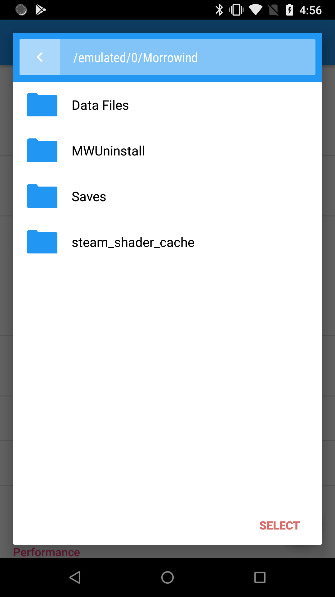

1) Purchase a copy of Morrowind. It is available from GOG or Steam. Please understand that if you purchase a copy of the game and it does not work on your phone, the store is not required to provide you a refund.
2) Install Morrowind on your PC
3) Locate the "Morrowind" folder on your PC
4) Copy the folder over to your Android device

5) Run OMW on your Android device and select a game language corresponding to your installation:
6) Click "Game files" and navigate to the "Morrowind" folder you've copied

7) Done! You can now click the Play button located in the bottom right corner and enjoy the game.